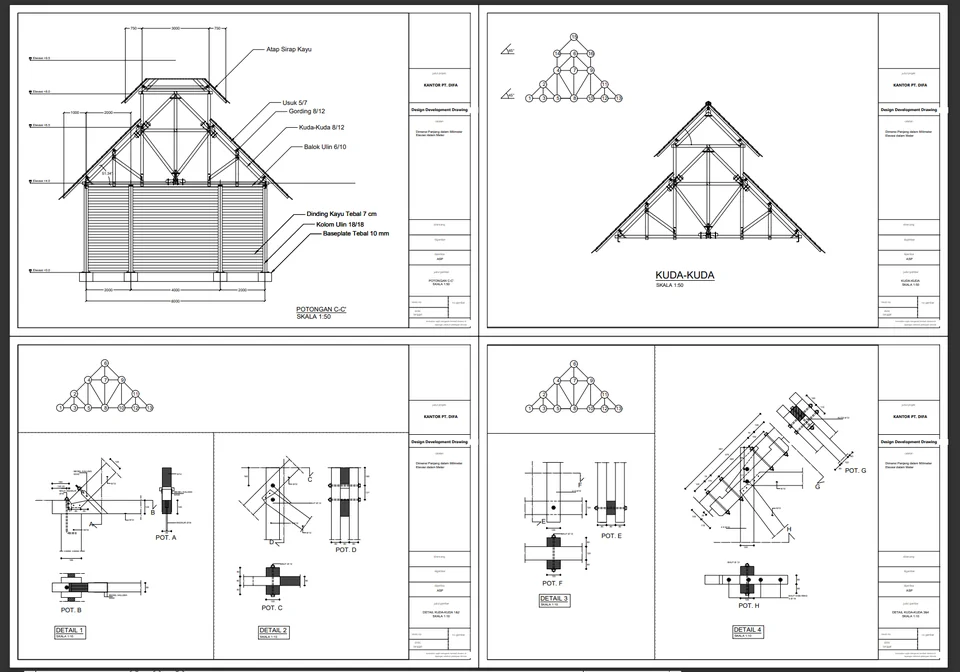
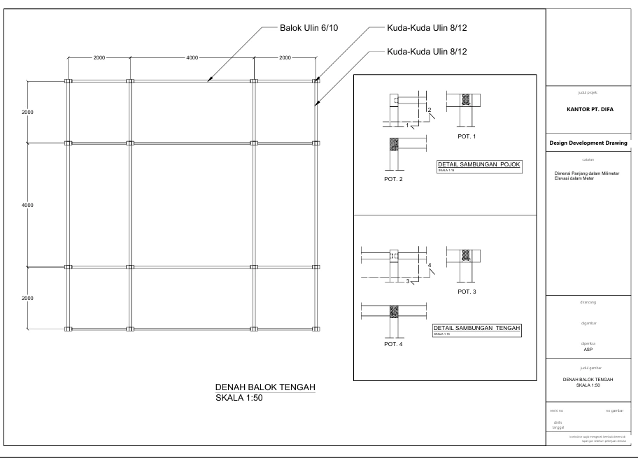

DRAFTER · 2025
Timber Office Hall Construction
Detailed Engineering Drawings for a timber hall structure, covering structural layout and connection detail for the complete wooden framing system.

Overview
Led structural detail engineering design (DED) for an office complex, translating architectural requirements into implementable structural solutions. Coordinated design adjustments to ensure constructability and site practicality while maintaining design integrity and architectural intent.
Wooden and timber structures present unique modeling challenges — connection detailing, grain orientation, and the non-orthogonal joinery typical of traditional construction.
Scope of Work
- Created detailed structural design documentation translating architectural plans into constructable solutions
- Adjusted structural designs to align with architectural requirements and site constraints
- Prepared construction drawing set — plans, sections, elevations, and key details
Key Deliverables
- Construction drawing set — floor plan, sections, elevations, connection details
Documentation

Structural Framing Layout

Connection Details & As-Built Drawing